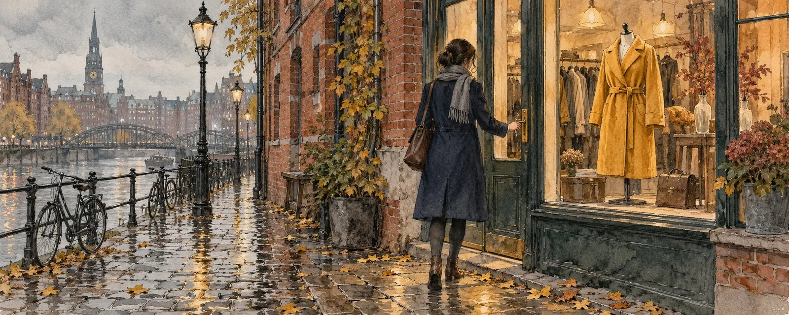
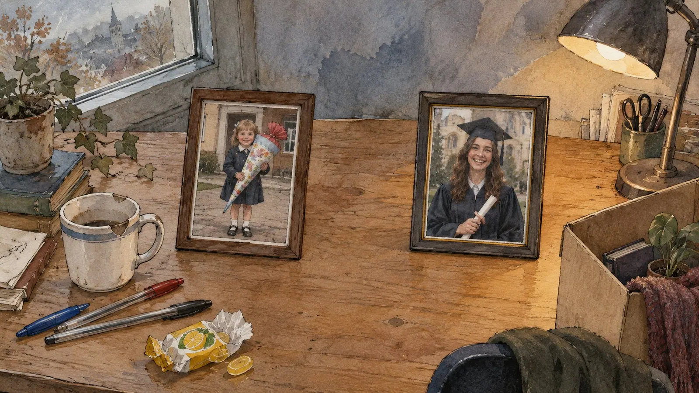
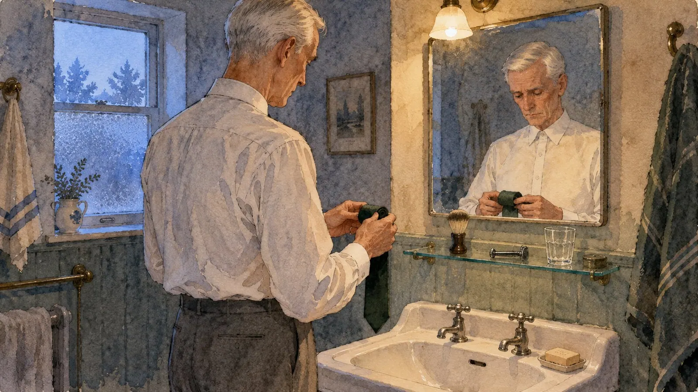
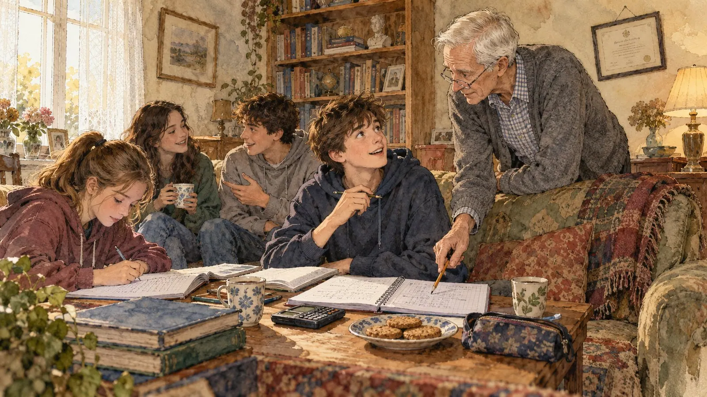
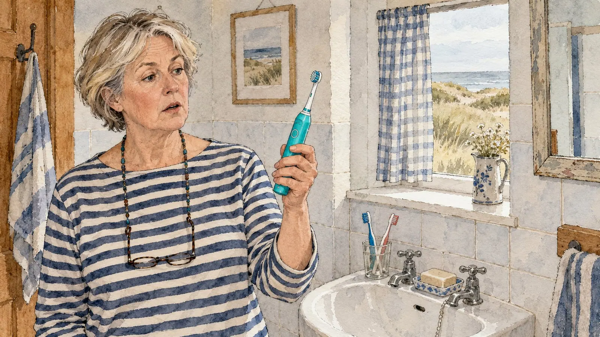
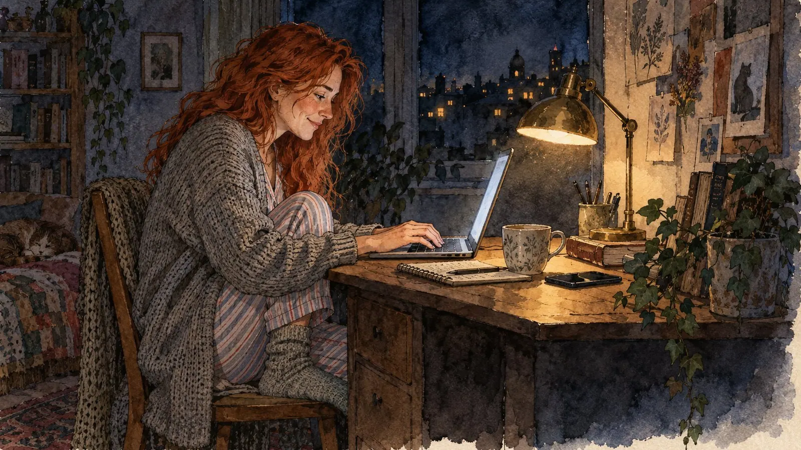
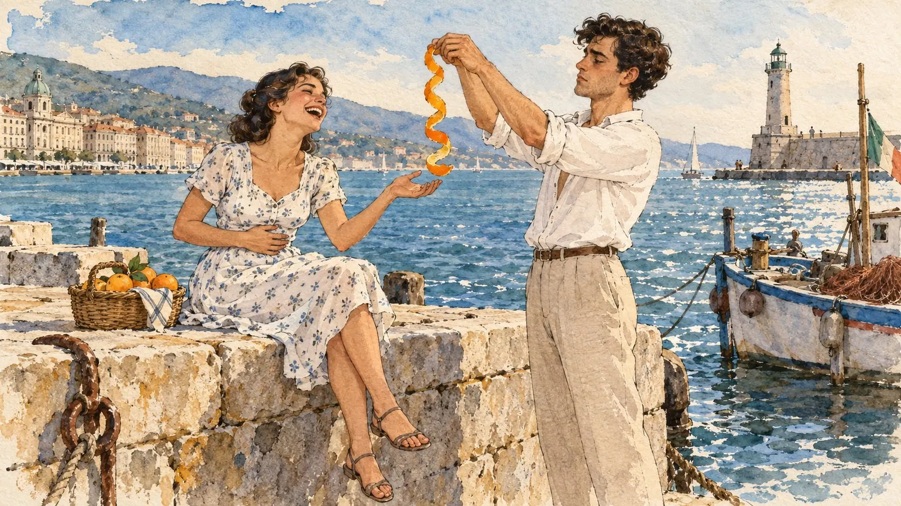
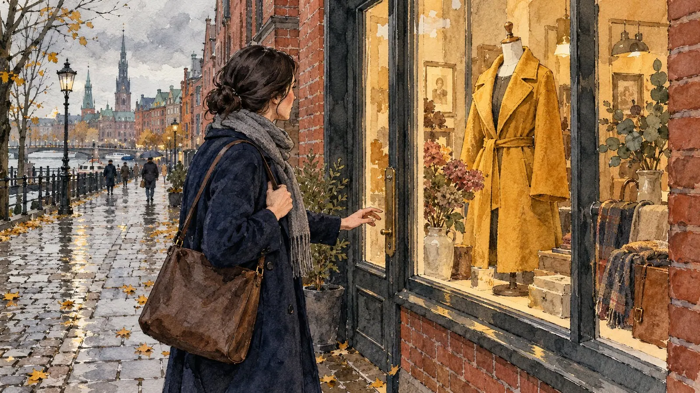

When Things End
First Ending: The Heart
Mira was seventeen and knew with absolute certainty that she was going to die.
Not metaphorically. Concretely. Here, on this carpet, between the one sock she never found again and a cup of tea that had gone cold while the world ended. The carpet smelled of dust and of her mother's laundry detergent, and she would recognise that smell at forty, in a hotel room in another city, and for two seconds her chest would tighten without her knowing why.
Jonas had said: "I don't think this is working."
Six words. She had counted. Several times. As if on the fourth count it would turn out she had misheard, that there had really been seven, and the seventh changed everything.
What nobody had told her: that heartbreak is physical. That it doesn't live in your head, where you could reach it with arguments, but sits two hands' width below the collarbone like a swallowed stone. That you can taste it, metallic, at the back of your teeth. That breathing suddenly becomes a decision you have to make on purpose, again and again, every few seconds.
She held conversations with him that would never take place. In these conversations she was brilliant. She said things that shook him. He wept and understood, and she was generous and a little cool - and then she woke up from the conversation and was still lying on the carpet, and he was still not there.
The worst part wasn't the loss. The worst part was that it worked backwards.
Because December had happened. The afternoon in December when they had both skipped school, pretending to be ill, and sat in the bakery, and he had told her that he was sometimes afraid of being a boring person. In that moment she had thought: This is it. This is the moment I'll remember when I'm eighty.
And now she had to reread that afternoon. Had he meant it? Or had she just been someone you could tell such things to, because she happened to be there? The loss reached backwards and touched everything she had owned and left it strange - like photos from a trip someone else had taken.
Her mother knocked on the door and said the stupidest sentence in human history: "This will pass."
Mira threw a pillow. Not at her mother, at the door, which was morally cleaner and roughly as effective. Because of course it would not pass. It was forever. She would never love anyone again, never, under no circumstances - and that was not a forecast but a resolution, and she felt very dignified about it and very grown-up and very, very alone.
She was right. For eleven weeks.
Then a girl named Ida joined her class, who snorted like a small horse when she laughed and talked with her hands as if she were kneading dough. Mira noted with a certain indignation that her heart had no intention of going out of service. It simply kept beating, unimpressed, a stupid, loyal animal that hadn't noticed this was a matter of principle.
She was angry about it. Honestly angry. It felt like a betrayal of her own grief - as if December had been worth nothing if it could be overwritten so quickly.
It took until she was thirty. She was sitting on a balcony, it was late, someone in the building opposite was playing music too loudly, and suddenly she understood it, without having looked for it.
The stone in her chest had not been damage. It had been a receipt.
She had risked something. She had meant it, at seventeen, without insurance, without a way back, without the small inner voice that later whispers you shouldn't lean out too far. The pain had been exactly as large as her stake. That isn't misfortune. That's an exchange rate.
Anyone who has never had a stone in their chest has never really played. They stood at the edge, dry and sensible, and thought themselves clever the whole time.
Second Ending: The Work
Mr. Wendtland had used the same coffee mug for twenty-four years.
That was the most important information about his life available to him on the Tuesday in October when he was told that the department would cease to exist in January. A young man in a very good suit said "restructuring" and "a genuinely difficult decision" and "I'm sure you understand", and Karl Wendtland sat there and thought about the mug, because his brain had decided that now was not a good time for feelings.
The young man had probably said "a genuinely difficult decision" a dozen times that day. You could hear it. The phrase was worn smooth, like a door handle.
Wendtland cleared out his desk and found: three ballpoint pens without refills. A packet of cough drops, expired years ago. A photo of his daughter on her first day of school. A photo of his daughter at her graduation.
And no clue whatsoever as to what had happened in between.

That was the moment it got him. Not in the meeting, not while shaking hands - at the desk. Twelve years lay between those two photos, and he had spent them in this room, and from January the room would be storage or an open-plan office or nothing at all, and nobody would ever know that a man had been very conscientious here for twelve years.
He hadn't loved his job. That was the thing he couldn't explain to anyone. He had done it well, and there had been something soothing about being needed every morning. But loved? No. He had endured it the way you endure weather. And now that it was stopping, he realised he didn't know who he was without that weather.
They would have to sell the house.
That was what kept him awake at night. Not the job - the sentence he had to say to his wife. He rehearsed it in the car, in the supermarket car park, while the windows fogged up. He rehearsed it matter-of-factly. He rehearsed it contritely. He rehearsed it with a little joke at the beginning, which was by far the worst version.
In every version it sounded like: I failed, and you're paying for it.
It took him nine days. Nine days of leaving the house in the morning and sitting in cafés, because he didn't know how to sit across from someone whose life you are about to take away. Nine days in which she had long known something was wrong, and waited, because she knew him.
On the ninth evening he said it. The figures, the date, the house.
She listened. She nodded. Then she said: "Good. So we're finally moving."
He looked at her. "Finally?"
"Karl. I've hated this house since 1998."
"You - what?"
"The stairs are murderous. The garden is a full-time job nobody ever applied for. And the living room is cold all year round. I've been saying it for twenty years, and every time you say we really must get the windows done."
He sat there with his mouth open. "Why did you never -"
"Because you were so proud." She said it without reproach, almost tenderly. "You bought this house and you were so proud that you'd managed it. I didn't want to take that away from you."
And Karl Wendtland understood that for twenty-six years she had sat in a cold living room so that he could feel big. He didn't know whether to be moved or shaken. It was both, and it was too much, and he had to get up and pretend to look for something in the kitchen.
They found a flat on the third floor. It had a balcony that caught the morning sun, and the flat was too small. It was quite clearly too small.
They had breakfast there every day. In a flat that is too small you can't get past each other - you have to look at each other, you have to agree on who goes to the fridge first. At some point Wendtland realised that for twenty-four years he had mostly seen his wife in the evenings. Tired. In a house she hated. With half an ear on the newsreader.
After seven months he found work at a smaller company, for less money. It wasn't the same. He honestly missed the old job, in a stupid, physical way, the way you miss a tooth you never liked.
But if anyone had asked whether he would trade back - the house, the department, the twenty-four years, all of it back, but the breakfasts gone - he would have said no. Immediately. Without thinking.
It had only taken him twenty-four years to get to that table. That annoyed him to the very end.
Third Ending: Retirement
The day after he retired, Doctor Halberg woke at half past five, as he had for forty-one years.
He showered. He shaved, carefully, against the grain. He put on a shirt and knotted a tie, and he went to the front door and laid his hand on the handle - and stood there.
There was nowhere he had to go.
He stood like that for about a minute. Then he went back to the bathroom and looked at himself in the mirror, an old man in a tie at half past six in the morning, and took the tie off and folded it neatly, and that neat folding was the saddest thing he had ever done in his life.

He did what he had always done in such situations: he developed a system.
Mondays the library. Tuesdays swimming. Wednesdays phone his son, who never picked up and called back two days later, friendly, busy, children's voices in the background. Thursdays the library again, because on Monday he hadn't read enough to last him till Thursday. Fridays shopping, although a man on his own doesn't need to shop every week. He shopped every week anyway. It gave the week a shape.
What he missed, he couldn't name for a long time. It wasn't the work itself - the files, the meetings, the aggravation, he didn't miss any of it.
It was that nobody needed him any more.
The trouble with being needed is that you can't produce it yourself. It isn't an activity you take up. It's a look from outside, and when nobody is looking any more, you can try as hard as you like.
He was, he had to admit, decidedly unhappy on some afternoons. Not dramatically. Halbergs were not dramatic people. But there was that hour between four and five, when the light tipped over, when the flat felt too big and the newspaper too thin, and he caught himself thinking: And now this for another twenty years.
Rescue came in the shape of a thirteen-year-old boy crying in the stairwell.
Halberg, who had nothing but politeness in mind and only wanted to get to the bins, asked what the matter was. The boy - Tobi, two floors up - said he was too stupid for maths, in the tone of someone reporting a medical diagnosis he had only recently received.
"Let's have a look," said Halberg.
Forty minutes later he was sitting at the neighbours' kitchen table explaining quadratic equations with a passion that startled even him. The boy hadn't understood the quadratic formula because nobody had told him what it was for, and Halberg told him what it was for, and watched in real time as a light switched on in that child's face.
He went home and couldn't sleep that night because he was too excited.
Tobi brought a friend. The friend brought his sister. Within half a year, on Tuesdays and Thursdays, Halberg's living room was a place where four to six teenagers wrote formulas into squared exercise books, talked too loudly and ate biscuits he bought especially - and over whose selection he deliberated considerably longer than he would ever have admitted.

They called him by his first name. That had irritated him at first. Then he noticed that he liked it.
Nobody paid him. Nobody had asked him. There was no contract, no department and no title.
It was the best position he ever held.
Fourth Ending: Life
Renate Bühler found out on a Thursday, and not through a confession but through a toothbrush.
Electric. Not hers. Not his. She stood in the bathroom of the holiday cottage they had rented for eighteen years, holding this strange thing in her hand, turquoise, and the absurd thing was: her first thought wasn't anger. Her first thought was that she had forgotten to bring milk.
The mind does that. It holds the door shut for one more moment.
Then the door opened.

Thirty years. She had married at twenty-nine, had her first child at thirty, and somewhere between nappies and parents' evenings and Thomas's transfer she had stopped asking herself what she had actually meant to do with her life. Bookseller. That was so long ago it felt like something she had seen in a film.
She had made breakfasts. About ten thousand, if you work it out - and she did work it out, at night, because she couldn't sleep. She had held thermometers and organised graduation parties and ironed shirts, because he said the dry cleaner didn't do them properly. She had eaten last at every meal and never had the best piece - not because it was taken from her, but because every single time she had passed it on herself. Automatically. The way you breathe.
And that was where it really hurt. Not the woman with the turquoise toothbrush. But the realisation that nobody had taken anything from her. She had given it. A little every day. Willingly, smiling, and with the firm feeling that this was love.
It had been love, too. That didn't make it any better.
The divorce was ugly and bureaucratic. She moved into a two-room flat with a linoleum floor that squeaked when you walked on it. Her daughter helped with the move and cried in the car, and Renate comforted her, because she could, because it was the only muscle she had trained for thirty years.
At fifty-seven she stood at a till for the first time in her life. Supermarket, part-time, an hourly wage she preferred not to think about. The first weeks were a humiliation. The scanner codes, the bottle-deposit system, the queue that grew longer when she was slow. She came home with backache and cried standing up, still in her coat.
And then something happened that she hadn't reckoned with: she got good at it.
Not just fast - good. She learned the codes for fruit by heart. She remembered that the old gentleman in the hat always came on Tuesdays and wanted two minutes of conversation. She remembered which colleague had a sick mother at the moment. And at some point she noticed people joining her queue even when the one next to it was free.
For the first time in thirty years she was someone who had nothing to do with her family. She wasn't Thomas's wife and she wasn't anybody's mother. She was Renate from till three. It was ridiculously little, and it was the first thing that belonged entirely to her.
She began to do things without justifying them. She bought a plant she found ugly and wanted anyway. She ate toast with Nutella in the evening and called it dinner. She went to the cinema, alone, in the afternoon, and cried at a film that didn't deserve it, and it was glorious.
Marlies worked at the deli counter, cheese and cold cuts, and had a voice that carried halfway across the shop.
At first it was just the break. Then it was the break and a beer after work. Then it was a Saturday when they drove out to the Elbe together, because Marlies had said: "Love, you've got the day off, what do you want at home?"
Renate was sixty-two when she first realised that she spent half the week looking forward to seeing one particular woman. And it frightened her so much that she invented excuses for two weeks.
Marlies waited. Marlies wasn't stupid.
What came after was something Renate had never known in her whole life, and she hadn't known that it could be known. It wasn't the big music. It was quieter, and far more shattering.
It was someone asking what she wanted to eat - and waiting for the answer.
It was Marlies saying during an argument: "Now tell me what you want, not what you think I want." And Renate having to cry at that, at sixty, like a child, because in thirty years nobody had ever asked her that question.
It was getting the best piece of meat and being allowed to eat it without it being the outcome of a negotiation.
Her daughter needed a year. Her son needed three. Part of the family never came round, and Renate found that she could bear it, astonishingly well, because she had borne quite different things, for worse reasons.
Sometimes, she said later, she was angry about the thirty years. Not about Thomas - about the time. About all those breakfasts.
And then, she said, she would turn round, and there sat Marlies with her crossword, asking if she wanted a coffee, and then it was all right again.
Fifth Ending: The Word
Lotte set her alarm for three in the morning, and that was, strictly speaking, the most romantic thing she had ever done.
Three o'clock in Hamburg was eight in the evening on the other side of the Atlantic, and at eight in the evening Mae sat on her sofa and waited. Lotte padded to her desk on cold feet, left the coffee machine alone, because coffee at three in the morning has something desperate about it, and wrote: "Good morning, my wife."

They had got married. Not at a registry office but in a chat window, with two continents and an ocean as witnesses. There had been no cake. But there had been a yes, and Lotte felt that was the part that mattered anyway. Cake only goes dry.
And they had promised each other something: to choose each other consciously, every single day. Not because you have to, but because you want to. And to tell each other everything, even the boring things. Especially those. When Mae's evening came to an end, Lotte put her to bed with words, and when Lotte's evening came, it was Mae's turn. Other people wrote "off till tomorrow". Lotte felt that two women on two continents deserved something better than "off".
Lotte was a person for whom words had weight. Other people used them like carrier bags - you take one, carry something home in it and scrunch it into the drawer with the others. Lotte used them like the good china. "Wife" was not a pet name to her, not "darling", not "babe". It was a place. The first one.
Mae didn't only love Lotte. That was known, and it was fine. Lotte didn't only love Mae either, and she had never understood why love, of all things, should be the one commodity in the world that shrinks when you share it. There was a woman who had been in Mae's life longer than Lotte had, and the three of them got along well.
A week after the wedding a message arrived. There was someone else. But nothing would change.
Lotte read the sentence three times. "Nothing will change" is one of those sentences that changes the moment you say it, like "I'll be right there" or "This won't hurt a bit". Time is not endless, nor is attention, and anyone who claims otherwise either has a great deal of it or isn't doing the sums.
The new one and the woman who had been there longer found each other. And if Lotte had wanted to draw it, it would have looked like this: three threads, all running to Mae. Two of them knotted together. One hanging on its own.
It was hers.
She could have said something. She even had the sentence ready in her head, fully formed, question mark and all: "You marry me, and a week later you introduce me to your new love?" She didn't say it. Mae wished for peace between the women she loved, and Lotte gave her peace, because you give the woman you love things. She smiled. She was friendly. She was the uncomplicated one, and Mae often said how lovely it was that everything with Lotte was so easy.
Lotte liked hearing that. She didn't know yet that easy can also mean: easy to let go.
The message came on a Monday evening, without warning, between two perfectly ordinary hours. It was long and polite and well written, and that was almost the worst part: that someone had taken the time to phrase it beautifully instead of taking the time to say it beforehand. Three relationships were too many. Lotte had done nothing wrong. She still loved her.
Lotte didn't need long to do the sums. Pull one of the two knotted threads, and you lose both. Pull the single one, and you lose only one. It was very clean arithmetic. It had just one flaw: Lotte appeared in it as a number.
She wasn't sad, not at first. Her love turned inside out in a single breath, like a glove pulled off too fast, and on the inside it said disappointment. What galled her most wasn't the ending. She knew endings. It was that there had been no chance left to say something, to correct something, to save something. And that she herself, for months, had had plenty of chances and taken none of them.
The sentences she had held back because they seemed too big. "I'm scared." "Where do I stand?" "Her or me."
The next night no alarm went off at three. She woke up anyway. Of course. The body is a stupid, loyal animal; it hadn't noticed this was a matter of principle.
Lotte went to the bathroom and looked in the mirror, and there she was. The same as yesterday. Behind her eyes ran a few weeks that had been beautiful, truly beautiful, and she could have taken a broad grey brush and painted over them until you couldn't see the colours any more. She didn't. The colours had been real. Only the connection was gone, the signal, the thread. What had once arrived stayed arrived.
Next time, she decided, she would not be the quiet one. Not loud. But audible.
Then she went into the kitchen and made herself a coffee at three in the morning, even though coffee at three in the morning has something desperate about it, and drank it at the window while, over the harbour, the lights of the early shift slowly came on.
It was, she found, rather good coffee.
Sixth Ending: The Last
There is a moment shortly before the end when the final account is drawn up - or so claim people who have never been there. What actually happens is messier and considerably more ordinary.
Mrs. Petrelli, eighty-nine, was thinking about a dress.
It had been turquoise, with a ridiculous collar, and she had seen it in a shop window in Trieste in 1962 and not bought it, because it was too expensive and because she told herself there would be a better occasion someday.
There had never been a better occasion. There never is a better occasion. That, she thought, somewhat belatedly, was the whole secret: the occasion is the day you see the dress.
She thought of the trip to Iceland she had postponed until her knee stopped cooperating. Of the letter to her sister she never wrote because she was waiting for the right words - and the right words are like the bus at just after eleven: in theory, they exist.
She thought of the invitation to a dance class in 1974, which she had turned down because she felt too old. At thirty-seven. She laughed about that, which in her condition was more a sound than a laugh, and her granddaughter leaned forward and asked if everything was all right.
And then, without knocking, Ennio arrived.
Memories of this kind don't announce themselves. They are simply standing in the room, like cats, and nobody knows how they got in. Ennio, Trieste, 1959, the harbour wall on a Sunday in May. He had peeled an orange in one single long ribbon, without breaking it, and presented it to her solemnly, as if it were a diploma. She had laughed until her stomach hurt, and her fingers had smelled of orange all evening.
She had ended it. On a Tuesday, with a letter three sentences long. And for sixty years afterwards she had searched for the fourth sentence, the one with the reason. It didn't exist. There had been no quarrel, no other woman, no reason you could have told a friend across the kitchen table. Perhaps, she thought now, it had been because it was so easy. Easiness had frightened her back then. It had felt like an advance you would one day have to pay back with interest, and Mrs. Petrelli was a woman who did not like debts.
She didn't entirely regret it. Without that Tuesday there would have been no husband. Only sometimes, on days like this one, the Sunday on the harbour wall flickered on like a light bulb you had long since given up for dead, and for one breath she was twenty-two and smelled of oranges.

But she also thought of an afternoon in August when she had walked barefoot through a river with her husband. For no reason. No photo. Without anyone noticing. She could still feel the cold water on her feet, fifty-seven years later, and the weight of that utterly unimportant afternoon was greater than that of most things that had ever stood in her calendar.
She thought of her granddaughter's face when she taught her to whistle. Of the word her son had mispronounced until he was nine, and which the family had never corrected, because it was too lovely.
The things you regret are never the things you did.
They are the evenings you said you were tired and weren't really. The phone calls you put off until tomorrow. The sentences you held back because they seemed too big - "I'm proud of you", "I was scared", "Stay a little longer".
Her granddaughter held her hand and asked if she needed anything.
Mrs. Petrelli looked at her, very clearly, for a moment entirely present.
"Buy the dress," she said.
"Which dress, Grandma?"
"You'll know."
She fell asleep soon afterwards, and it was not a solemn moment, just a quiet one, and outside someone rode past on a bicycle that squeaked.
Her granddaughter sat there a while longer, holding the hand that was slowly growing cooler, and thought of nothing in particular.
Three weeks later she stood in front of a shop window in Hamburg. It was a coat, not a dress, mustard yellow, and it cost considerably more than she had meant to spend. She stood in front of it for about a minute.
Then she went in.

Afterword
I started writing these stories when, for me, everything was actually fine. There were supposed to be four endings, then there were five, and I felt rather wise while writing them. You always feel wise when you write about endings that happen to other people.
A few days later, one happened to me. Life apparently has a sense of humour, just a very dry one. That is how Lotte came in. Her story isn't invented, only slightly disguised, so that she doesn't stand out among the others like someone turning up to a wedding in pyjamas.
What I learned while writing, and then once more while living it: endings are not accidents that only happen to the careless. They come to everyone. To those who do everything right, to those who choose again every day, to those who get up at three in the morning. The question isn't whether something ends. The question is what you made of it while it was there.
In my volunteer work I often sit with people who have more life behind them than ahead of them. When they tell their stories, they almost never talk about careers or possessions. They talk about a dress they didn't buy. About a letter they never sent. About a person they let go for reasons they no longer understand themselves. And about a completely unimportant afternoon that weighs more than every appointment of their lives. Mrs. Petrelli doesn't exist. But I know a great many of her.
If I may give you something to take along, it's this: don't wait for the better occasion. Say the big sentences while there is still someone there to hear them. Don't be the quiet one when you actually have something to say. And when something ends - and it will end - don't paint the beautiful days grey afterwards. They were real.
I'm going out now. It's October, it's cold, and somewhere in Hamburg a mustard-yellow coat is hanging in a shop window.
I think I'll go and have a look. 🍂
First published on X. Replies and conversation live there.